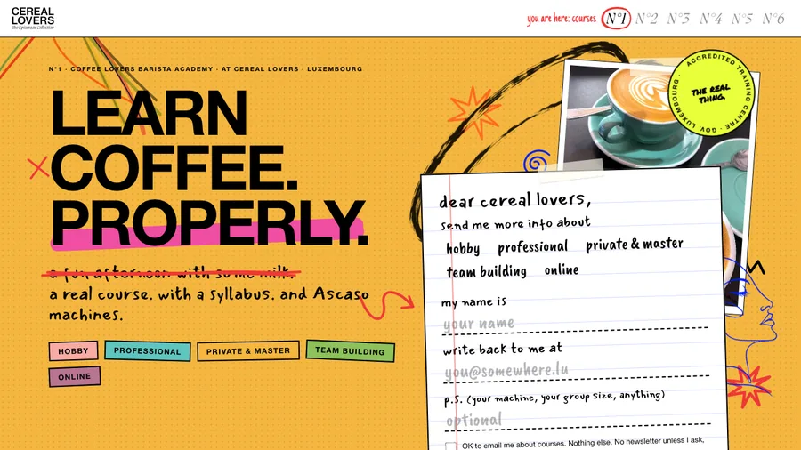
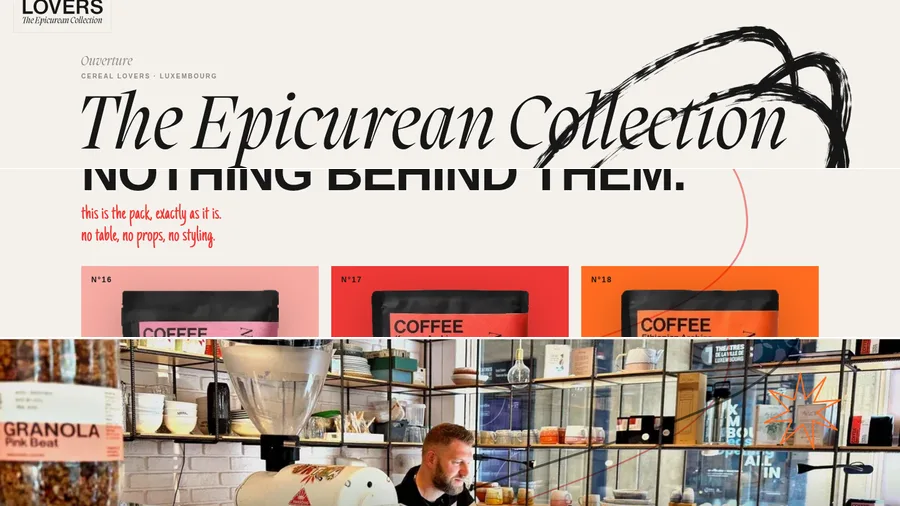
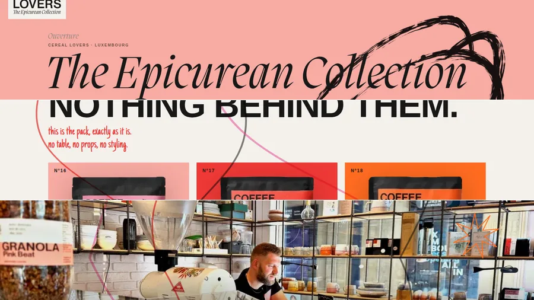

CEREAL LOVERS · WEBSITE 2026 · FOR REVIEW
Two versions of the new site. Same shop, same toolbox, same content, turned up two different amounts. This is a private preview. The real cereallovers.lu has not been touched.
scroll each one to the bottom. there is no menu bar, that is on purpose.

OPTION B, PUSHED · COURSES FIRST · OCTOBER 2026
Option B with the volume up. The barista courses come first: hobby, professional, private and master, team building. A handwritten "send me more info" note is the first thing you see, and a paint splat lands next to it. The dates come from one small file, so they stay fresh. Then the four granolas as their jar labels, the three coffees in colour, the bars and the cookies.
OPEN THE NEW ONE 01
OPTION A · QUIET GROUND, LOUD MARKS
Everything on the cream paper of the packaging. The colour arrives in the products, the annotations and the marks, not in the background. One ink line and one red pen draw down the whole page as you scroll.
OPEN OPTION A 02
OPTION B · THE SEPTEMBER VERSION
The same architecture, but every section is a full brand colour: coral, jade, ochre, cobalt, mauve, red. Five pens scribble down the page. Same words, same photographs, roughly four times the volume.
OPEN THE SEPTEMBER BHow to look at these. Click a button, scroll all the way down, then click the black BACK TO BOTH OPTIONS chip in the bottom left corner to come back here.
The round red mark in the bottom right corner of each option is the navigation. It shows which of the six sections you are in. Click it to jump anywhere.
It works on a phone. Turn the phone upright, not sideways.